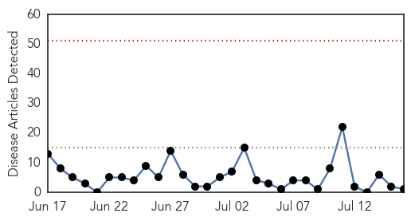
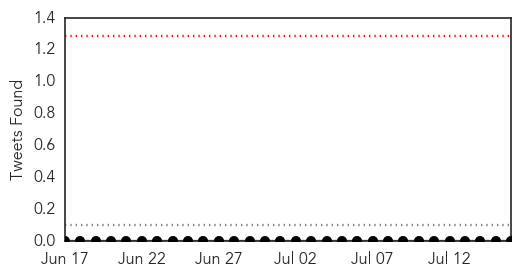
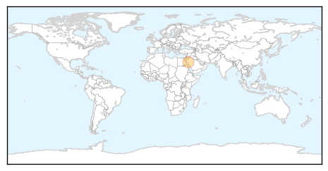
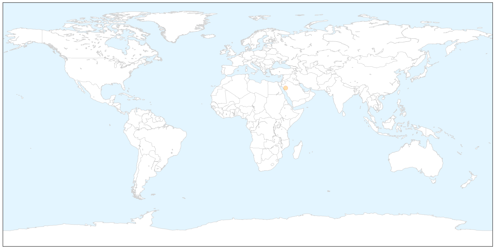
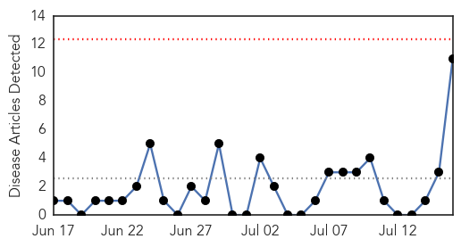
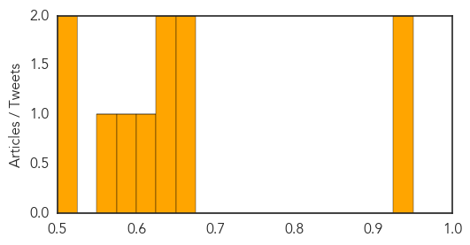

MERS
30-Day Web Trend
0 alerts, 0 warnings

30-Day Twitter Trend
0 alerts, 0 warnings

Article Locations

X

Article Confidences

Top Articles:
Top Tweets:
-
No tweets found for Jul 16, 2014
Hepatitis
30-Day Web Trend
0 alerts, 0 warnings

30-Day Twitter Trend
0 alerts, 0 warnings

Article Locations

Article Confidences
Top Articles:
- 0.947
- Hepatitis E on the rise in S. Sudan’s Lakes state - South Sudan
- 0.932
- Hepatitis E on the rise in S. Sudan's Lakes state
- 0.656
- Almost 7 million need aid in Sudan
- 0.654
- Where did HIV come from? Is it a Man-made virus?
- 0.648
- Seven million people need aid in #Sudan
- 0.625
- 10 Things Your Doctor Won't Tell You About Your Blood Tests
- 0.603
- Lacking awareness: Used syringes lead to rise in hepatitis cases in Malir goth
- 0.588
- Kulgam inhabitants struggle for essential services
- 0.565
- Monsoon showers diseases on rag pickers
- 0.508
- Marinscope Community Newspapers : Opinion
- 0.502
- Humanitarian Needs Reach US$982 million « African Press International (API)
Top Tweets:
-
No tweets found for Jul 16, 2014